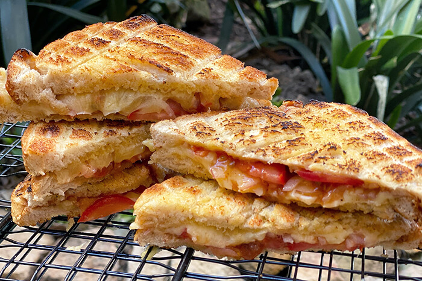

Braai Broodjie

Description
A delicous tomato and cheese sandwhich that is cooked on an open wood fire.
Ingredients
- Slices of bread (typically store-bought white) x 2
- Slices of tomato
- Slices of onion
- Cheese (typically Cheddar)
- Butter to spread
- Chutney to spread (typically Mrs Balls Chutney)
Steps
- Spread the butter and chutney on the open bread (do not be shy).
- Slice and add tomato to the bread.
- Slice and add onion to the bread.
- Grate cheese on the bread.
- Cook on medium-to-high heat wood fire for about 5 minutes or until the cheese has melted, while turning the bread regularly to avoid burning it.
Main Menu